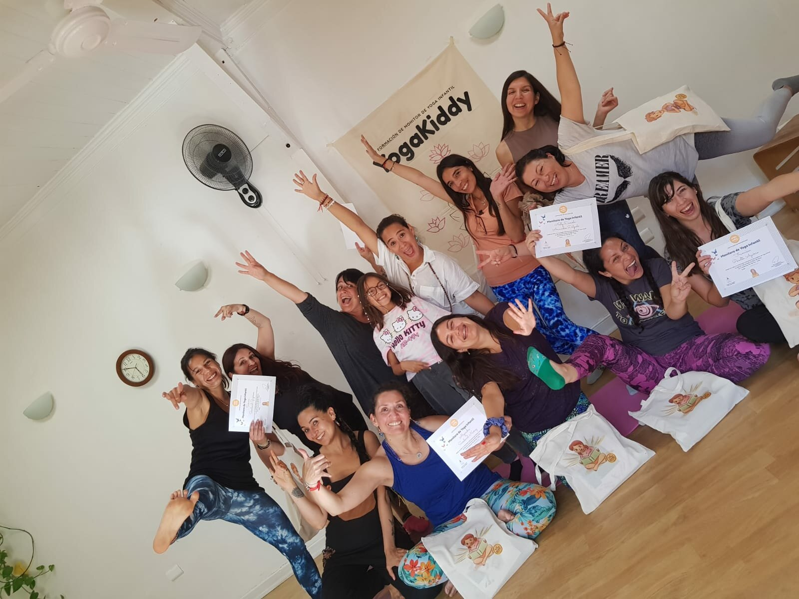

La formación de yoga infantil YogaKiddy en Vina del Mar, Chile, fue un éxito rotundo. Con un grupo de mujeres entusiastas y capacitadas para guiar las sesiones de yoga únicas y divertidas. La formación abordó técnicas específicas para enseñar yoga a los niños, desarrollando habilidades como la concentración, la relajación y la flexibilidad, mientras se divierten y se sienten cómodos.
Los testimonios de los participantes han sido abrumadoramente positivos. Muchos han expresado su gratitud por haber tenido la oportunidad de aprender de expertos en el campo y han elogiado la energía positiva y la calidad de las enseñanzas. Una participante dijo: "Esta formación ha sido una experiencia increíble. Me siento más preparada para guiar sesiones de yoga para niños y ver a los niños disfrutar de los beneficios y el aprendizaje a través del yoga es simplemente mágico".
Además de aprender técnicas específicas para enseñar yoga a los niños, la formación de yoga infantil YogaKiddy también brindó una oportunidad para que las participantes se reencontraran con su niña interna. A través de prácticas de yoga, meditación y reflexión, las mujeres pudieron reconectarse con su lado juguetón y curioso, recordando la importancia de mantener un equilibrio entre la seriedad y la diversión en su vida diaria.
Una participante compartió su experiencia: "Este fin de semana ha sido un viaje emocionante a mi niña interior. Practicar yoga junto con otros adultos y recordar la importancia de mantener la diversión en nuestra vida ha sido liberador. Gracias a YogaKiddy por esta increíble experiencia".
No sólo aprendieron a enseñar yoga a los niños, sino que también se permitieron a sí mismas un momento para el autoconocimiento y la autorreflexión, lo que les permitirá llevar una vida más equilibrada y satisfactoria.
Si estás interesado en unirte a la próxima formación de yoga infantil, tenemos programadas en Chile, México, España, Bélgica y Francia. Únete a nosotros para disfrutar de una experiencia enriquecedora y aprender a enseñar yoga a los niños de una manera divertida y significativa.
¡Esperamos verte pronto en nuestra próxima formación!